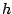
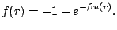
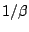
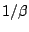
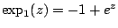
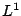
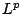

A numerical bifurcation analysis of the Ornstein-Zernike equation
Robert E Beardmore
Dept. of Mathematics, Imperial College London
South Kensington Campus, London SW7 2AZ UK
r.beardmore@ic.ac.uk
A Peplow, F Bresme
The isotropic Ornstein-Zernike (OZ) equation
that is the subject of this
paper was presented almost a century ago to model the
molecular structure of a fluid at varying densities. In
order to form a well-posed mathematical system of equations
from (1) that can be solved, at least in
principle, we assume the existence of a closure
relationship. This is an algebraic equation that augments
(1) with a pointwise constraint that is deemed to
hold throughout the fluid and it forces a relationship
between the total and direct correlation functions ( and
respectively).
Some closures have a mathematically
appealing structure in the sense that the total correlation
function is posed as a perturbation of the Mayer
f-function given by

This
perturbation depends on the potential  , temperature
(essentially ) and the indirect correlation
function through a nonlinear function that we denote :
, temperature
(essentially ) and the indirect correlation
function through a nonlinear function that we denote :
so that (1-2) are solved together with
and as bifurcation parameters. There are many
closures in use and if we write
 then
the hyper-netted chain (HNC) closure
has the form of
(2) and is popular in the physics and chemistry
literature.
The purpose of the talk is show that any
reasonable discretisation method applied to
(1-2) suffers from an inherent defect if
the HNC closure is used that can be summarised as follows:
phase transitions lead to fold bifurcations. The existence
of a phase transition is characterised by the existence of a
bifurcation at infinity with respect to in an  norm
at a certain density, such that boundedness of is
maintained in a certain  norm. This behaviour is
difficult to mimic computationally by projecting onto a
space of fixed and finite dimension and, as a result,
projections of (1-2) can be shown to
undergo at least one fold bifurcation if such a bifurcation
at infinity is present. However, other popular closure
relations do not necessarily suffer from the same defect.